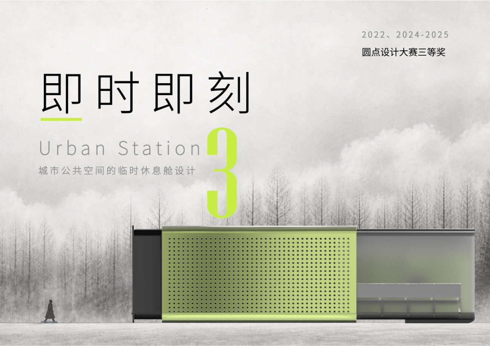
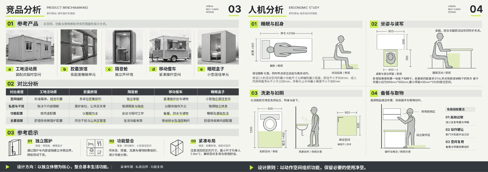
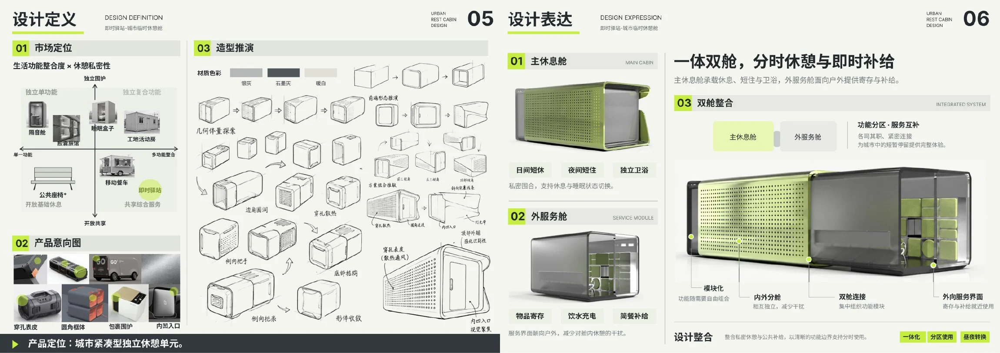
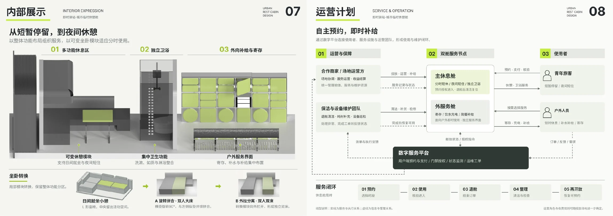

研究生 · 公共空间 · 服务设计
即时即刻
Urban Station
为城市户外工作者设计的模块化休憩站，把短时休息和日常补给纳入同一个公共空间。

项目概览
空间需求
从户外工作者的休憩需求出发，对照现有服务站点，结合人机尺度分析停留、用餐和取物等活动所需空间。
布局与使用
将休息、桌面使用和储物等功能整合到紧凑舱体中。用平面布局、室内渲染和运营计划呈现站点如何使用。
项目图稿



